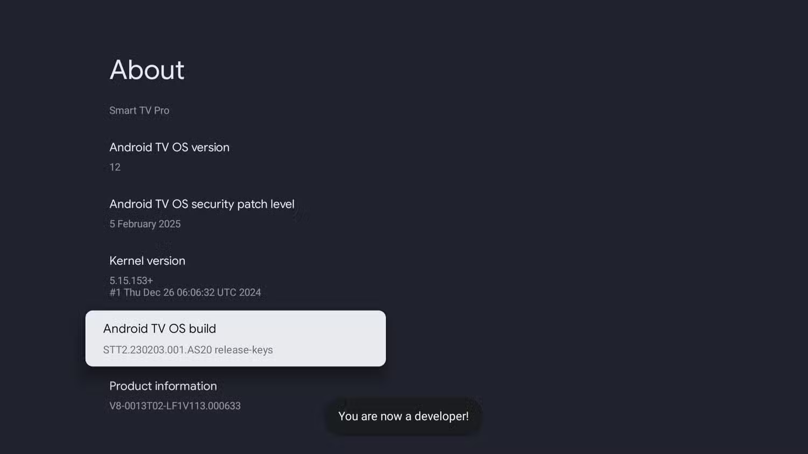
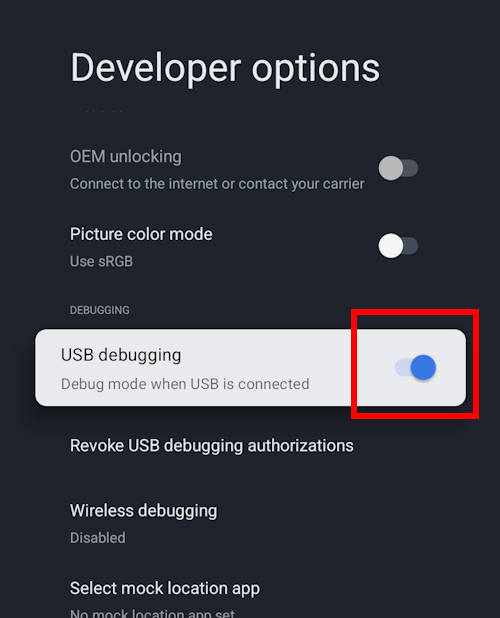
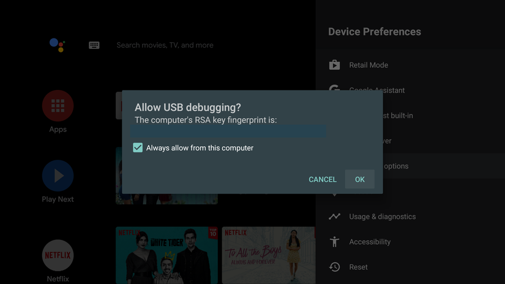

Oak House TV Wi-Fi Procedure
Last updated November 11, 2025.
1 General Overview
1.0.0.1 The Problem
- The SONY TVs at Oak House do not allow end-users to connect to EAP WiFi networks like
UofToreduroam.
1.0.0.2 The Solution
- Using a specially developed app, we can create a connection to the secure UofT wifi networks manually.
- However, installing the app is a little time consuming. See the procedure below.
2 Connection Procedure
The following procedure explains the network setup using this application on Oak House TVs.
If the application is already installed on the TV, you may skip to Section 2.4
2.1 Prerequisite USB/ADB & Internet Setup
In order to install the application, we need to temporarily enable developer access on the TV. Developer access allows us to install apps on the TV from outside the Google Play store through a computer
- Go to Settings -> System -> About, scroll down to select Android TV OS build. Click this field multiple times until you see a popup that states “You are now a developer”.

- Go back to Settings -> System and find Developer Options
- Scroll down to find USB debugging and enable this.

We will need to remember to disable this later in Section 2.3!!
2.1.1 Temporary Internet Connection
Now that we have enabled developer access, we need to find a way to communicate with the TV. Since the TV is not connected to the network, we have no way of communicating with it.
The current way I have been doing this is using the blueish router in the drawer.
Plug the GLinet router into the wall outlet with its associated plug. Use an ethernet cable from the laptop bag (or any other ethernet cable) to connect either port from the back of the router to the ethernet port on the side of the TV.
Wait a minute or two for the router’s light to stop flashing, indicating it’s done starting up.
Connect the ResNet laptop to the wifi network beginning with
GLinetand ending with5G.- NOTE FOR LATER STEPS: If at any point the
adbcommands fail, it’s very likely the laptop disconnected from the router and is back on the UofT/eduroam network.
- NOTE FOR LATER STEPS: If at any point the
Identify the temporary IP address of the TV in Settings -> Network and Internet.
- Note down this IP address somewhere. This is not a permanant address, and is only applicable when the TV is temporarily wired to the router.
2.2 Installing the App onto the TV
There are TWO versions of the application you can install on the TV.
preset-wifi.apkandno-preset-wifi.apk. The preset version includes the private credentials used to connect only the Common Room TVs to the wifi. Do not install thepreset-wifi.apkfile on any student TVs. Instead, useno-preset-wifi.apk.
For STUDENT TVs use
no-preset-wifi.apk.
On the laptop, open the terminal, type
adb connect IP_ADDRESS, whereIP_ADDRESSis replaced by the IP you gathered earlier, and hit the Enter key.On the TV, a prompt will appear asking to confirm the debugging connection. Allow this.
- It might be convenient to tick the checkbox to “always allow from this computer” so that you never have to see this popup again.

At this point, a helpful debugging step to confirm if the laptop is connected to the TV or not, is to run
adb devicesin the terminal and read the response. If it shows a device asconnected, you’re good. If nothing is there, something is wrong
- Decide which version of the app you need to install.
preset-wifi.apk- ONLY for Common Room TVs. Includes special wifi credentials inside the app.no-preset-wifi.apk- for Student TVs, requires a network name, username, and password to be inputted to connect the TV.
- On the laptop, run either
adb install preset-wifi.apkoradb install no-preset-wifi.apk, depending on your choice. This command installs the application onto the TV.
2.3 Disabling Debug Access
Now that the application is installed and the network has been connected, we need to disable ADB access.
Navigate to Settings -> System -> Developer options.
Disable USB debugging, and scroll to the top and disable Enable developer options
When you exit out this menu, the developer options menu should be gone.
2.4 Connecting to the Network
Once the app is installed, unplug the ethernet connection to the TV.
Navigate to the applications menu on the TV, and launch “Enterprise Wi-Fi for TVs”.
- The app on first launch will prompt for location access, this should be allowed. If you press no, you will have to uninstall, and reinstall the application to try again.
Next, follow the applicable section for
2.4.1 Student TVs (no-preset-wifi.apk)
Instruct the student to type their UTORid into the
UTORidfield, and their password into thePasswordfield.Hit Connect when done. A popup should eventually appear asking to connect to a Wi-Fi networks suggested by Enterprise Wifi. Press Yes.
Navigate to Settings to confirm the connection. If it hasn’t connected, go to Settings -> System -> Restart and it should be connected after the restart.
2.4.2 Common Room TVs (preset-wifi.apk)
Scroll down inside the application to the Connect To Preset button, and select it. A popup should appear asking to “Connect to Wi-Fi networks suggested by Enterprise Wifi”. Press yes.
Navigate to Settings to confirm the connection. If it hasn’t connected, go to Settings -> System -> Restart and it should be connected after the restart.
2.5 Connection is Complete!
You’re done! The wifi connection should be working fine now. The rest of the instructions should not be needed if your goal is just to connect a TV to the internet.
3 Appendix
3.1 Using the Application
3.1.1 Disconnecting / Removing the Network Configuration
- Option 1: Use the Disconnect button inside the application.
- Option 2: Uninstall the application.
3.1.2 Changing Credentials
- To change credentials, modify the file in
app/src/res/raw/preset_config.jsonOR create a new file atapp/src/res/raw/preset_config.jsonbased onpreset_config.json_exampleat root dir. - Recompilation will be required in order to create a new APK to install the new credentials. Follow the instructions in Section 4
4 Compiling the Application
The application is stored in a GitHub repository at https://github.com/SmatMan/Enterprise-WiFi. In order to compile the application, you must install and setup some prerequisites for Android application development.
4.0.1 Setting Up Android Development Environment
In order to compile the application yourself, you need to install Android development tools on your computer. You only need the bare minimum to compile the app, not the full Android Studio IDE.
4.0.2 Install Java Development Kit (JDK)
The Android build tools require Java to run.
Check if Java is already installed by opening Terminal and running:
java --versionIf Java is not installed, download and install the JDK:
- Visit https://adoptium.net/
- Download Temurin 17 (LTS) for your system (likely Linux for the ResNet laptop)
- Run the installer and follow the prompts
4.0.3 Install Android Command Line Tools
You only need the command line tools, not the full Android Studio application.
Visit https://developer.android.com/studio#command-line-tools-only
Download the Command line tools only for your platform
Create a folder to store Android tools:
mkdir -p ~/Library/Android/sdk/cmdline-toolsUnzip the downloaded file and move it:
cd ~/Downloads unzip commandlinetools*.zip mv cmdline-tools ~/Library/Android/sdk/cmdline-tools/latest
4.0.4 Install Required SDK Components
The build process needs specific Android SDK packages.
Open Terminal and run the following commands to install the required packages:
cd ~/Library/Android/sdk/cmdline-tools/latest/bin ./sdkmanager "platform-tools" "platforms;android-34" "build-tools;34.0.0"Accept the license agreements when prompted (type ‘y’ and press Enter)
4.0.5 Set Environment Variable
The build script needs to know where your Android SDK is located.
Open Terminal and edit your shell configuration file:
nano ~/.bashrcAdd this line at the end of the file:
export ANDROID_HOME="$HOME/Library/Android/sdk"Save the file (press Control+X, then Y, then Enter)
Apply the changes:
source ~/.bashrcVerify it worked:
echo $ANDROID_HOMEYou should see:
/Users/your_username/Library/Android/sdk
4.0.6 Clone the Project
- Open your terminal and
cdto a convenient location where you would like to keep the application code. - Run
git clone https://github.com/SmatMan/Enterprise-WiFito download the code.
4.0.7 Compile the Application
Now you’re ready to build the app!
Open Terminal and navigate to the project folder with
cd.Make the build script executable (only needed once):
chmod +x ./gradlewRun the build command:
./gradlew assembleDebugWait for the build to complete. You’ll see “BUILD SUCCESSFUL” when done.
4.0.8 Finding Your Compiled App
The compiled APK file will be located at:
app/build/outputs/apk/debug/app-debug.apkThe file app-debug.apk is what you’ll install on the TV using the adb install command from the main procedure.
4.0.9 Troubleshooting
If the build fails with “SDK location not found”: - Make sure you set the ANDROID_HOME environment variable correctly - Try closing and reopening Terminal
If the build fails with “License not accepted”: - Run the sdkmanager command again and make sure to type ‘y’ to accept licenses
If you get “Permission denied” errors: - Run chmod +x ./gradlew to make the build script executable